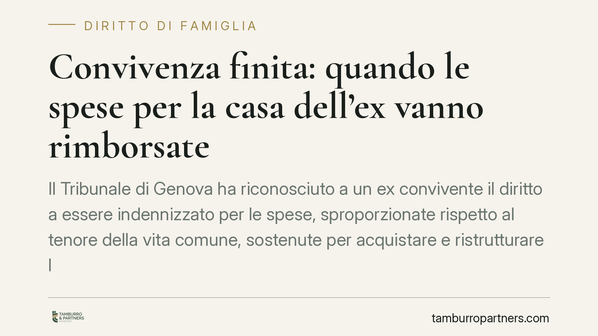

Convivenza finita: quando le spese per la casa dell'ex vanno rimborsate
Il Tribunale di Genova ha riconosciuto a un ex convivente il diritto a essere indennizzato per le spese, sproporzionate rispetto al tenore della vita comune, sostenute per acquistare e ristrutturare la casa intestata al partner. La decisione esclude che si trattasse di donazione e apre un canale di tutela per chi, finita la relazione, resta a mani vuote.

Il fatto
Un uomo aveva versato somme rilevanti per l'acquisto e la ristrutturazione di un immobile intestato esclusivamente alla compagna. Finita la convivenza, l'immobile restava a lei; a lui nulla.
Il Tribunale di Genova (Sez. VI Civile, giudice Mariaelena Cunati) ha riconosciuto all'ex convivente un indennizzo ai sensi dell'art. 2041 del codice civile. Ha escluso che quei pagamenti fossero donazioni e ha rigettato la pretesa dell'altra parte di compensarli con i canoni di locazione figurativi per il godimento della casa.
Inquadramento normativo
L'art. 2041 c.c. disciplina l'arricchimento senza causa: chi si è arricchito ai danni di un altro, senza una ragione giuridica che lo giustifichi, deve indennizzare l'impoverito nei limiti dell'arricchimento. È un'azione residuale (art. 2042 c.c.): si può esperire solo quando il danneggiato non dispone di altra azione per farsi ristorare.
Il nodo nelle convivenze è questo. Durante la relazione, molte dazioni di denaro o prestazioni si considerano adempimento di obbligazioni naturali (art. 2034 c.c.): contributi spontanei alla vita comune, non ripetibili perché doverosi sul piano morale e sociale. Chi paga la spesa, le bollette, le piccole spese domestiche non può pretenderne la restituzione.
Il discrimine è la proporzionalità. Quando l'esborso eccede nettamente quanto richiesto dalla solidarietà familiare e dal tenore di vita della coppia, non è più adempimento di un dovere morale: diventa un'attribuzione patrimoniale priva di causa, suscettibile di indennizzo. È la linea seguita anche dalla Cassazione in più pronunce sul tema.
Perché la decisione conta
Il Tribunale ha valorizzato tre passaggi.
Primo: le somme erano sproporzionate rispetto alla normale contribuzione alla vita familiare. Non spese correnti, ma investimenti su un bene durevole intestato ad altri.
Secondo: nessuna donazione. La donazione di importi non modici richiede l'atto pubblico (art. 782 c.c.). In assenza, e mancando la prova di uno spirito di liberalità, il pagamento non si qualifica come regalo.
Terzo: niente compensazione con i canoni. L'aver abitato l'immobile non estingue il credito, perché il godimento durante la convivenza rientrava nella logica della vita in comune, non in un rapporto locativo.
Implicazioni pratiche
Per chi convive senza matrimonio né unione civile, la tutela patrimoniale resta fragile. Non esiste comunione legale dei beni, non c'è assegno di mantenimento alla cessazione del rapporto. Chi investe sulla casa dell'altro rischia di perdere tutto.
La pronuncia conferma che una via c'è, ma è stretta. L'art. 2041 c.c. non copre i contributi ordinari alla convivenza: copre solo gli esborsi anomali per entità, documentati e non giustificabili come doni o adempimento spontaneo. Il peso della prova grava interamente su chi chiede l'indennizzo.
Attenzione anche ai termini: l'azione di arricchimento si prescrive in dieci anni, che decorrono dal momento in cui l'impoverimento si consolida. Nelle convivenze, individuare quel momento non è sempre immediato.
Cosa fare in concreto
- Conservate la tracciabilità. Bonifici con causale, estratti conto, fatture e preventivi intestati dimostrano chi ha pagato e per cosa. I pagamenti in contanti sono quasi impossibili da provare.
- Distinguete gli investimenti dalle spese correnti. Documentate a parte gli esborsi rilevanti su immobili, ristrutturazioni e beni durevoli intestati al partner: sono quelli recuperabili.
- Valutate un accordo di convivenza. Il contratto di convivenza (legge 76/2016) permette di regolare in anticipo contributi e rapporti patrimoniali, riducendo il contenzioso futuro.
- Non lasciate decorrere i termini. Se la relazione è finita e avete sostenuto spese sproporzionate, consigliamo di far valutare tempestivamente la posizione, prima che la prescrizione maturi.
- Raccogliete elementi sullo spirito dell'esborso. Messaggi, contesto e accordi verbali possono servire a escludere la qualificazione come donazione.
Disclaimer
Contributo informativo a cura di Tamburro & Partners - Avv. Giuseppe Tamburro. Non costituisce parere legale.
Ogni famiglia ha il suo equilibrio.
Separazione, divorzio, affidamento, assegno: se vuoi un confronto riservato su una specifica situazione, scrivi allo studio. Ti rispondiamo entro un giorno lavorativo.